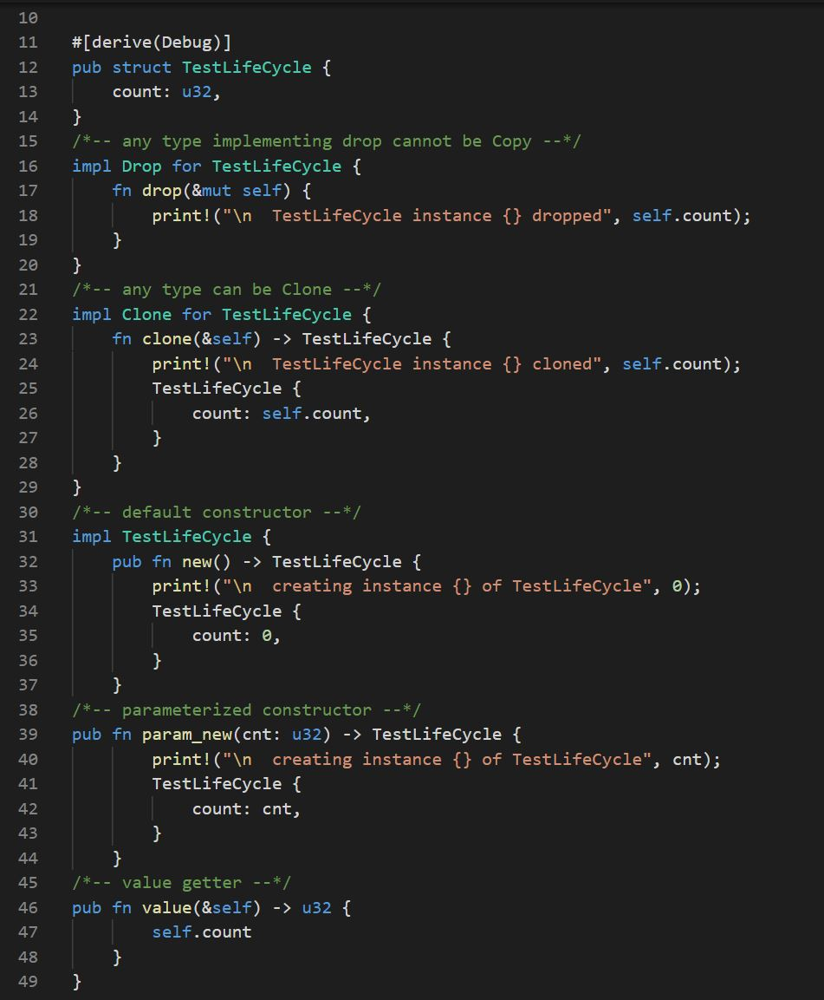
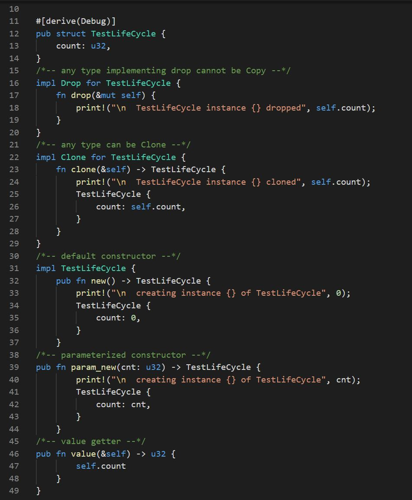
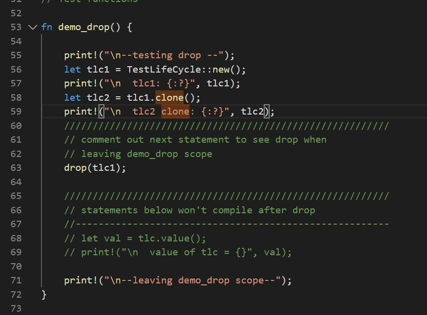

Test Code
|  |  |
| - | default constructor provides object with default state | |
| - | parameterized constructdor provides object with program supplied state | |
| - | clone function, e.g., copy constructor makes a new object that is a copy of cloner | |
| - | drop function, e.g., destructor, releases resources held by object when it goes out of scope | |
| - | value getter returns object's state |
|  | |
|  |
 |
 |
 |
 |
 |
 |